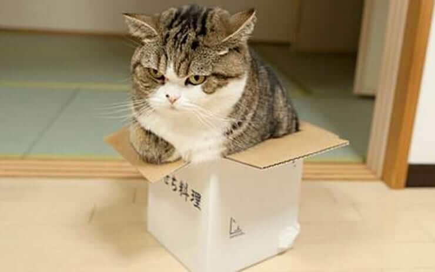

Всі ми обожнюємо котів, і це не просто так: це дивовижні тварини. Ми думаємо, що знаємо про них вже все, однак ці пухнасті все ще можуть здивувати.
Тому що з коробок зручно спостерігати. Коли кицьки відпочивають, вони здебільшого прагнуть почуття захищеності, але не забувають пильнувати.
Ще одна причина – освоєння нових територій. Це інстинкт. І ним можна пояснити, чому деякі вусаті залюбки сідають всередині намальованого на підлозі кола. Щоб зрозуміти котів, поставте себе на їхнє місце і згадайте, що вони набагато частіше користуються слухом і нюхом, ніж ми. Тому те, що для нас означає просто коло, для них може означати щось інше. Кішка може інтерпретувати його як місце на підлозі, яке пахло інакше п'ять хвилин тому – піду посиджу там і подивлюся, що буде далі.
